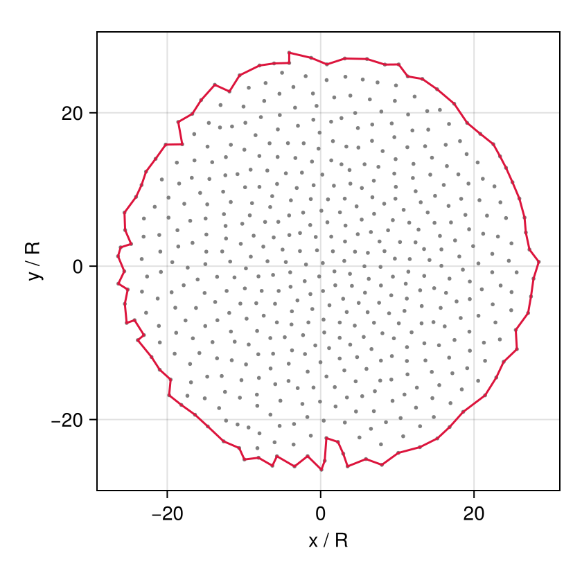

A growing monolayer (OpenVT reference model)
A single cell on a dish grows, divides, and its daughters do the same, until a colony covers the dish. The OpenVT project (Open Virtual Tissues) uses this as a benchmark for comparing cell-based simulators: every framework implements the same growth, division and contact-inhibition rules, and the colonies are compared over time. The consortium's manuscript (Reference Model for the Simulation of a Growing Tissue Monolayer with Contact Inhibition, in preparation) fixes the parameters every framework uses in its Table S1. PottsModels ships that model as OpenVTReferenceMonolayer, and this page is about it. The full benchmark, figure by figure, is reproduction 15 (OpenVT monolayer benchmark, in the Published models section).
What you will learn
- how a per-cell reference area grows through an
@after_mcsrule, and how that rule expresses both kinds of contact inhibition; - how
@dividetriggers division on a per-cell random threshold and splits the mother's variables between the daughters; - how to stop a run at a cell count or near the lattice edge, and write the benchmark's output files.
The cell sorting page explains the parts every model shares.
The reference model (Table S1)
The manuscript specifies the monolayer by rules:
- each cell has a reference area $A^*_i$ and an area constraint $\lambda (A_i - A^*_i)^2$, with contact energies $J_{cc} = 20$ between cells and $J_{cM} = 10$ with the medium, Metropolis acceptance at $T = 20$;
- growth: $A^*_i$ grows by $\alpha = 50/775$ per MCS, so a cell cycle is $A^*(0)/\alpha = 775$ MCS;
- division: a cell divides when its area reaches $X_i A^*(0)$, with $X_i \sim N(2, 0.4)$ (redrawn while $\le 0$) drawn by each cell at birth, along a uniformly random plane; both daughters take half the mother's $A^*$;
- contact inhibition: type 1, a cell grows only while $a_i = A_i/A^*_i \ge \beta$; type 2, only while its free-surface fraction $f_i \ge \gamma$ (the share of its unlike contacts that face the medium). Growth and division are decoupled;
- one disc-shaped cell of area $A^*(0) = 50$ starts the colony, and a run stops at the end of the first MCS with at least 10⁴ cells. Lengths are in $R = \sqrt{A^*(0)/\pi}$.
The paper run
OpenVTReferenceMonolayer with its Table S1 defaults, run as reproduction 15's case (b) (β = γ = 0, stochastic X) from one cell to 10⁴ cells on a closed 1400 × 1400 lattice. It is computed outside the docs build:
Paper run — OpenVTReferenceMonolayer (the manuscript's Table S1: A*(0) = 50, λ = 2, T = 20, α = 50/775 per MCS, J_cc = 20, J_cM = 10, X ~ N(2, 0.4)), case (b) of reproduction 15 (β = γ = 0, no contact inhibition): one cell to N = 10007 cells at MCS 11446 (14.77 cell cycles of 775 MCS) on a closed 1400×1400 lattice, seed 15001, SequentialCPM(; proposal = Moore(1)), one frame every 39 MCS. Each cell has its own colour. Rendered on AMD RYZEN AI MAX+ 395 w/ Radeon 8060S, CPU backend, one thread, commit cda818379.
The model in Potts.jl
The constructor's definition, abridged:
@potts_model OpenVTReferenceMonolayer begin
@structural_parameters begin
lattice = (1400, 1400)
end
@kinds medium cell
@parameters begin
A₀ = 50.0; λ = 2.0; T = 20.0; α = 50 / 775
μ_X = 2.0; σ_X = 0.4; β = 0.0; γ = 0.0
J[kind, kind] = [0.0 10.0; 10.0 20.0]
end
@variables begin
A_star(cell) = A₀
X(cell) = 0.0
f(cell) = 1.0
end
@lattice Lattice(lattice; boundary = Closed(), neighborhood = Moore(1))
@relations proposal = Moore(1)
@energy begin
cells(cell) => λ * (volume - A_star)^2
contacts => J[kind, kind′]
end
@before_mcs X ~ ifelse(Pre(X) > 0, Pre(X), randn(μ_X, σ_X; lower = 0.0))
@after_mcs begin
f ~ ifelse(count(true for _ in contacts) > 0,
count(kind′ == medium for _ in contacts) / count(true for _ in contacts), 1.0)
A_star ~ ifelse((volume / Pre(A_star) >= β) && (f >= γ), Pre(A_star) + α, Pre(A_star))
end
@divide cells(cell) when = volume >= X * A₀, along = RandomPlane(), A_star => Split(),
X => randn(μ_X, σ_X; lower = 0.0)
@sweep Metropolis(; temperature = T)
endusing Potts, PottsModels
using MakiePotts, CairoMakie"openvt"Two rules use DSL forms of their own. The free-surface fraction is a contact count, kept exact by every copy (see Updates):
f ~ count(kind′ == medium for _ in contacts) / count(true for _ in contacts)and the division threshold is a truncated normal draw, made separately by each daughter (see Lifecycle):
@divide cells(cell) when = volume >= X * A₀, along = RandomPlane(), A_star => Split(),
X => randn(μ_X, σ_X; lower = 0.0)Running it
Three cell cycles on a 120 × 120 lattice, with the run stopped if a cell comes within 5 sites of the edge (PottsModels.edge_guard) and at 64 cells (PottsModels.stop_at_cells):
@named ref = OpenVTReferenceMonolayer(; lattice = (120, 120))
prob_ref = PottsProblem(ref, openvt_reference_state(; lattice = (120, 120)), (0, 3 * 775); seed = 1, capacity = 256)
guards = CallbackSet(PottsModels.edge_guard(5; terminate = true), PottsModels.stop_at_cells(64))
sol_ref = solve(prob_ref, SequentialCPM(); saveat = 0:15:(3 * 775), callback = guards)
(retcode = sol_ref.retcode, cells = count(>(0), sol_ref.u[end].cell.volume))(retcode = SciMLBase.ReturnCode.Success, cells = 6)The colony, coloured by cell:
record_potts("openvt/reference.mp4", sol_ref; framerate = 15, title = "Table S1 monolayer",
encoding = CellIdentityEncoding(), figure = (; size = (440, 440)), axis = (; limits = (20, 100, 20, 100)))The O2 rows of the benchmark (centroid, radius, free-surface fraction and area fraction, lengths in units of $R$) for the last state:
snap = PottsModels.openvt_snapshot(sol_ref.u[end])
(n = length(snap.x), mean_f = sum(snap.f) / length(snap.f), mean_a = sum(snap.a) / length(snap.a))(n = 6, mean_f = 0.7141467569647727, mean_a = 0.9782883205865556)The O1 rows, M's time-series format (PottsModels.openvt_frame): the same centroids, the inhibition code at given thresholds β and γ, and the number of distinct neighbouring cells on Moore(1). write_openvt(path, :O1, frame) writes them.
frame = PottsModels.openvt_frame(sol_ref.u[end]; β = 0.0, γ = 0.0)
(n = length(frame.x), mean_neighbours = sum(frame.n) / length(frame.n), growing = count(==(0), frame.i))(n = 6, mean_neighbours = 2.0, growing = 6)PottsModels.OpenVTReferenceMonolayer — Function
OpenVTReferenceMonolayer(; name, lattice = (1400, 1400), …)The OpenVT growing monolayer with contact inhibition as the benchmark manuscript specifies it (Table S1 and §2.1; spec 15_openvt_monolayer.md §2). One disc-shaped cell grows into a colony on a closed lattice, large enough that the colony stays away from the edge (guard it with edge_guard):
- area constraint
λ (volume − A_star)², adhesionJ[kind, kind′]onMoore(1)withJ_cm = 10,J_cc = 20(no net adhesion), Metropolis atT; - growth once per MCS after the sweep:
A_star += αiffvolume / A_star ≥ β(type 1) andf ≥ γ(type 2), wherefis the free-surface fraction, the cell's medium contact pairs over its unlike contact pairs onMoore(1)(M's Fig 4, TST's "method 3"), read with the contact foldcount(kind′ == medium for _ in contacts) / count(true for _ in contacts); - division at
volume ≥ X · A₀along a random plane. Both daughters take half the mother'sA_starand draw their ownX ~ N(μ_X, σ_X), redrawn whileX ≤ 0(randn(μ_X, σ_X; lower = 0)); the first cell draws itsXthe same way before the first division check.σ_X = 0is the deterministic modeX ≡ μ_X.
Parameters (Table S1): A₀ = 50 (A*(0), px), λ = 2, T = 20, α = 50/775 px/MCS (a cycle of 5T = A₀/α = 775 MCS), μ_X = 2, σ_X = 0.4, β = γ = 0 (uninhibited) and J = [0 10; 10 20]. Cell variables: A_star, X and f.
Seed with openvt_reference_state. Stop at a cell count with stop_at_cells; record the O2 rows with openvt_snapshot. The 2024 Artistoo parameter set is the variant OpenVTGrowingMonolayer.
PottsModels.openvt_reference_state — Function
openvt_reference_state(; lattice = (1400, 1400), A₀ = 50)One disc-shaped cell at the lattice centre: the sites whose centres lie within R = √(A₀/π) of the centre point (size .+ 1) ./ 2 (Morpheus' Sphere radius = R), id 1, as [ownership => σ, kind => [:cell]]. For A₀ = 50 that is 52 sites on an even lattice and 45 on an odd one.
Variant: the 2024 Artistoo set (OpenVTGrowingMonolayer)
Before the manuscript fixed Table S1, the benchmark circulated with the parameter set of its Artistoo implementation (2024). PottsModels keeps it as OpenVTGrowingMonolayer, a documented variant: it is lighter (a smaller cell, exact division at $2A_0$, no free-surface fraction), so it serves as the teaching example of the growth tutorial and the workshop. It is not the benchmark's reference model. How the two differ:
OpenVTGrowingMonolayer (2024 Artistoo set) | OpenVTReferenceMonolayer (Table S1) | |
|---|---|---|
| Contact energies $J_{cc}$ / $J_{cm}$ | 20 / 20 | 20 / 10 |
| $\lambda$, $A^*(0)$ | 20, 25 | 2, 50 |
| Growth | $A_0/\tau$ per MCS | $\alpha = 50/775$ per MCS: a cycle of 775 MCS |
| Division size | exactly $2A_0$ | $X_i A^*(0)$, $X_i \sim N(2, 0.4)$ redrawn while $\le 0$, drawn by each daughter at birth |
| Daughters' target | reset to $A_0$ | half the mother's $A^*$ |
| Contact inhibition | type 1 ($V \ge \beta V_T$) | type 1 ($A_i/A^*_i \ge \beta$) and type 2 (free-surface fraction $f_i \ge \gamma$) |
| Initial cell | a 5 × 5 square | a disc of radius $R = \sqrt{A^*(0)/\pi}$ (52 sites) |
| Lattice | 400 × 400 | 1400 × 1400, closed, with an edge guard |
The rest of this section builds the 2024 variant step by step and runs it at a size that takes seconds. Its rules:
- each cell has a target area $V_T$ and an area constraint $\lambda (V - V_T)^2$; cell–cell and cell–medium contact energies are equal, so there is no net adhesion;
- $V_T$ grows by $A_0/\tau$ per MCS, so an unconstrained cell doubles its area in $\tau$ MCS;
- a cell divides when its area reaches $2A_0$, along a uniformly random plane, and both daughters restart at $V_T = A_0$;
- contact inhibition (type 1): a cell grows only while its area is at least $\beta V_T$. A compressed cell, squeezed below its target by its neighbours, stops growing.
Step 1: the lattice
@structural_parameters begin
lattice = (400, 400)
end
@lattice Lattice(lattice; boundary = Closed(), neighborhood = Moore(1))
@relations proposal = Moore(1)A closed 400 × 400 lattice (the Artistoo reference file uses 1100 × 1100) with Moore contacts and copies.
Step 2: cell kinds
@kinds medium cellStep 3: parameters
@parameters begin
A₀ = 25.0
λ = 20.0
τ = 84.0
β = 0.0
T = 20.0
J[kind, kind] = [0.0 20.0; 20.0 20.0]
endThe Artistoo parameter set: $A_0 = 25$, $\lambda = 20$, a doubling time $\tau = 84$ MCS and $T = 20$. Both contact energies are 20. β = 0 switches contact inhibition off (the benchmark's baseline); its inhibited runs use $\beta \approx 0.9$.
Step 4: the target area
@variables V_target(cell) = A₀V_target(cell) is one value per cell. Its default refers to a parameter: a new cell starts at A₀.
Step 5: the energy
cells(cell) => λ * (volume - V_target)^2The area constraint pulls each cell towards its own, growing, target.
contacts => J[kind, kind′]Step 6: growth with contact inhibition
@after_mcs V_target ~ ifelse(volume >= β * Pre(V_target), Pre(V_target) + A₀ / τ, Pre(V_target))After every MCS each cell whose area is at least $\beta V_T$ adds $A_0/\tau$ to its target; the others keep it. Pre(V_target) is the value before the update, and volume the cell's current area. With β = 0 the condition always holds.
Step 7: division
@divide cells(cell) when = volume >= 2A₀, along = RandomPlane(), V_target => A₀@divide names the cells that may divide (cells(cell)), the condition (when), the division plane (along = RandomPlane(), a uniformly random orientation through the cell's centre) and what the daughters' variables become: both start again at $V_T = A_0$.
Step 8: the sweep
@sweep Metropolis(; temperature = T)
endThe whole model
@potts_model GrowingMonolayer begin
@structural_parameters begin
lattice = (400, 400)
end
@lattice Lattice(lattice; boundary = Closed(), neighborhood = Moore(1))
@relations proposal = Moore(1)
@kinds medium cell
@parameters begin
A₀ = 25.0
λ = 20.0
τ = 84.0
β = 0.0
T = 20.0
J[kind, kind] = [0.0 20.0; 20.0 20.0]
end
@variables V_target(cell) = A₀
@energy begin
cells(cell) => λ * (volume - V_target)^2
contacts => J[kind, kind′]
end
@after_mcs V_target ~ ifelse(volume >= β * Pre(V_target), Pre(V_target) + A₀ / τ, Pre(V_target))
@divide cells(cell) when = volume >= 2A₀, along = RandomPlane(), V_target => A₀
@sweep Metropolis(; temperature = T)
endWe run it on the constructor's 400 × 400 lattice with the Artistoo parameters:
dims = (400, 400)
@named mono = GrowingMonolayer()PottsSystem mono on 400×400 (2D)
kinds: medium, cell
parameters: A₀, λ, τ, β, T, J
variables: V_target(cell)
energy cells(1) => ((-V_target(t) + volume)^2)*λ
energy contacts => Potts.at2(J, kind, kind′)
@after_mcs V_target(t) ~ ifelse(volume >= (Pre(V_target(t))*β), Pre(V_target(t)) + A₀ / τ, Pre(V_target(t)))
divide cells(1) when volume >= (2A₀)
sweep: metropolis(temperature = T)The starting state
One square cell of area $A_0$ at the centre. A Tiling layer restricted to a 5 × 5 region makes exactly one 5 × 5 box. It is the state that openvt_monolayer_state builds:
u0 = layout(Tiling((5, 5); region = (198:202, 198:202), kinds = [:cell]), dims)
u0[1].second == openvt_monolayer_state()[1].secondtrueSolving
840 MCS are ten doubling times $\tau$. New cells need room in the state: capacity is the largest number of cells the run can hold.
prob = PottsProblem(mono, u0, (0, 840); seed = 1, capacity = 4096)
sol = solve(prob, SequentialCPM(); saveat = 0:8:840)PottsSolution: retcode Success, 106 saved states, 840 MCS
t: [0, 8, 16, 24, 32, …, 808, 816, 824, 832, 840]The run as a movie
All cells are of one kind, so the movie colours them by identity (CellIdentityEncoding), and zooms in on the central 180 × 180 sites, where the colony grows, through the axis limits:
record_potts("openvt/monolayer.mp4", sol; framerate = 15, title = "Growing monolayer",
encoding = CellIdentityEncoding(), figure = (; size = (440, 440)), axis = (; limits = (110, 290, 110, 290)))Measuring growth
The benchmark's first observable is the number of cells. sol[:volume] gives every cell's area at every saved time (zero for slots not yet used), so the live cells are those with a positive area. If every cell grew freely, the count would double every $\tau$ MCS; the dashed line is $2^{t/\tau}$:
ncells = [count(>(0), v) for v in sol[:volume]]
CairoMakie.activate!(type = "png")
fig = Figure(size = (520, 340))
ax = Axis(fig[1, 1]; xlabel = "MCS", ylabel = "cells", yscale = log2)
lines!(ax, sol.t, ncells; label = "simulation")
lines!(ax, sol.t, 2 .^ (sol.t ./ 84); linestyle = :dash, label = "2^(t/τ)")
axislegend(ax; position = :lt)
fig
The doubling time fitted over the second half of the run:
half = sol.t .>= 420
tm = sum(sol.t[half]) / count(half)
slope = sum((sol.t[half] .- tm) .* log2.(ncells[half])) / sum(abs2, sol.t[half] .- tm)
1 / slope90.51314879055671It is somewhat longer than $\tau = 84$: a cell's area lags its growing target, and a cell divides only when its area itself reaches $2A_0$.
The benchmark's colony metrics
The benchmark measures each saved colony with the consortium's metrics.cpp: the tissue boundary is a concave hull of the cell centroids, and from it come the mean radius r, the area A, the perimeter C, the boundary roughness w, and the ratios C_rel = C/(2√(πA)) and w_rel = w/r. openvt_metrics ports that program, built on the general primitive PottsModels.Analysis.concave_hull. Its output line is identical to metrics.cpp built with -ffp-contract=off on the consortium's 25 parameter-plane colonies and on fuzzed tie-free clouds. It departs from the reference on purpose in two places where the reference's boundary depends on luck: the Graham order of points collinear with the pivot, and an R-tree search that can miss candidates next to near-parallel edges (spec defects D12 and D13). In both, the port's boundary is the correct hull. The benchmark's unit of length is the cell radius $R = \sqrt{A_0/\pi}$, with the origin at the lattice centre. Ids of cells that have vanished have NaN centroids, so they are dropped first:
using PottsModels.Analysis: centroids, concave_hull
R = sqrt(25 / π)
cs = filter(c -> !isnan(c[1]), centroids(sol.u[end].σ))
x = [(c[1] - 200) / R for c in cs]
y = [(c[2] - 200) / R for c in cs]
m = openvt_metrics(x, y, ones(Int, length(cs))) # β = 0: every cell grows(N = 524, r = 26.347114338178958, A = 2212.671497934725, C = 188.89243046267694, w = 1.8673126805278042, g = 1.0, C_rel = 1.1327945524506016, w_rel = 0.07087351793292698)openvt_metrics_line(m) is what metrics.cpp prints, and write_openvt writes the benchmark's files: here the O6 metrics series, one row per save:
print(openvt_metrics_line(m))
io = IOBuffer()
write_openvt(io, :O6, (t = [840 / 84], metrics = [m])) # t in cycles of τ = 84 MCS
print(String(take!(io)))524,26.3471,2212.67,188.892,1.86731,1,1.13279,0.0708735
t,N,r,A,C,w,g,C_rel,w_rel
10,524,26.3471,2212.67,188.892,1.86731,1,1.13279,0.0708735The boundary itself, over the centroids:
b = concave_hull(zip(x, y); concavity = 1.5)
fig = Figure(size = (420, 420))
ax = Axis(fig[1, 1]; aspect = DataAspect(), xlabel = "x / R", ylabel = "y / R")
scatter!(ax, x, y; markersize = 4, color = :gray)
lines!(ax, [first.(b); b[1][1]], [last.(b); b[1][2]]; color = :crimson)
fig
For an inhibited run, openvt_inhibition_code classifies each cell and openvt_inhibition_fractions gives the shares of the four codes; read_openvt reads any of the files back and openvt_filename names them as the benchmark expects.
Differences from the 2024 Artistoo file
| Artistoo reference file | Here | |
|---|---|---|
| Lattice | 1100 × 1100 | 400 × 400 (constructor default); enough while the colony stays clear of the walls, not for the benchmark's 10⁴ cells |
| Division size | random, $N(2, 0.4) \cdot A_0$ | exactly $2A_0$, as in the benchmark's written baseline specification |
The energies, growth law, division plane and parameters are the Artistoo set. This section runs the uninhibited baseline (β = 0) for ten doubling times; the 2024 set's inhibited runs use β ≈ 0.9. For the benchmark itself, use OpenVTReferenceMonolayer (above).
This variant ships as OpenVTGrowingMonolayer
PottsModels exports this model as OpenVTGrowingMonolayer; the test suite checks that it compiles to the same code and defaults as GrowingMonolayer above.
@named openvt = OpenVTGrowingMonolayer()PottsSystem openvt on 400×400 (2D)
kinds: medium, cell
parameters: A₀, λ, τ, β, T, J
variables: V_target(cell)
energy cells(1) => ((-V_target(t) + volume)^2)*λ
energy contacts => Potts.at2(J, kind, kind′)
@after_mcs V_target(t) ~ ifelse(volume >= (Pre(V_target(t))*β), Pre(V_target(t)) + A₀ / τ, Pre(V_target(t)))
divide cells(1) when volume >= (2A₀)
sweep: metropolis(temperature = T)Its start is openvt_monolayer_state(). Contact inhibition is a parameter, so the benchmark's inhibited runs start from [openvt_monolayer_state(); :β => 0.9].
PottsModels.OpenVTGrowingMonolayer — Function
OpenVTGrowingMonolayer(; name, lattice = (400, 400), …)The OpenVT growing-monolayer benchmark (OpenVT reference models, monolayer/) with the Artistoo parameter set. One cell grows into a colony on a closed lattice:
- area constraint
λ (volume - V_target)²with no net adhesion (J_cc = J_cM = 20); - the target area grows by
A₀/τper MCS, so an unconstrained cell doubles inτMCS; - a cell divides at the deterministic size
2A₀along a uniformly random plane, and both daughters restart atV_target = A₀; - type-1 contact inhibition: a cell grows only while
volume ≥ β V_target.β = 0(the default) is the uninhibited baseline; the benchmark's inhibited runs useβ ≈ 0.9.
Seed with openvt_monolayer_state. The benchmark measures cell count, colony area and radius against time.
PottsModels.openvt_monolayer_state — Function
openvt_monolayer_state(; lattice = (400, 400), A₀ = 25)One square cell of area ≈ A₀ at the lattice centre: [ownership => σ, kind => [:cell]].
PottsModels.openvt_metrics — Function
openvt_metrics(path::AbstractString)
openvt_metrics(x, y, g)The OpenVT monolayer metrics of one saved colony, as the consortium's metrics.cpp computes them: a NamedTuple (; N, r, A, C, w, g, C_rel, w_rel), all Float64 except the cell count N.
The boundary is Analysis.concave_hull of the cell centroids (x, y) with concavity 1.5. With B boundary vertices, B > 2:
r: the mean distance of the vertices from their meanc;A: the area enclosed (shoelace formula);C: the perimeter of the closed boundary;w: $\sqrt{\sum (|v - c| - r)^2 / (B - 1)}$, the spread of the vertex radii;
and r, A, C, w are NaN for B ≤ 2 (fewer than three cells, or collinear ones). g is the fraction of growing cells (Σg/N, g a 0/1 flag per cell), C_rel = C/(2√(πA)) and w_rel = w/r.
The file method reads a headed CSV as metrics.cpp does: the header is split on , and " and ' are removed from the names; the columns x, y and g are found by name (the last one of each name; other columns are ignored), and empty lines are skipped. A field is read as C++'s std::stod/std::stoi read it: leading spaces are skipped and the longest numeric prefix is taken, so 1.5abc reads as 1.5 and a g of 1.0 as 1. CRLF line ends are accepted (metrics.cpp would keep the in the last header name). A file without g but with an i column (an O1 file, see write_openvt) takes g = (i == 0) (spec C8). A missing x or y, neither g nor i, a data row with too few fields, or a field that is not a number or overflows Float64 (where std::stod throws) is an ArgumentError. Unlike metrics.cpp, an n column is not required. No cells (an empty file or empty vectors) and, in the vector method, a non-integer g are ArgumentErrors.
The sums run in metrics.cpp's order with no fused multiply-adds, and the boundary is Analysis.concave_hull's. The output of openvt_metrics_line is identical to metrics.cpp -ffp-contract=off on the 25 OpenVT parameter-plane colonies and on fuzzed clouds without ties. It departs from the reference on purpose where the reference's boundary depends on luck: its Graham order for points collinear with the pivot (spec defect D12), and its R-tree pruning next to near-parallel edges (D13). In both, this boundary is the correct hull. Exact ties between hull candidates are broken differently from the C++ R-tree, and everything is Float64: the reference is the arm64 build, where long double is double.
See also openvt_neighbor_histogram for metrics.cpp's third output.
PottsModels.openvt_metrics_line — Function
openvt_metrics_line(m) -> StringThe line metrics.cpp prints for the metrics m of openvt_metrics: N,r,A,C,w,g,C_rel,w_rel and a newline, each value as C++'s ostream << writes it (C's %g, six significant digits; NaN as nan).
PottsModels.openvt_neighbor_histogram — Function
openvt_neighbor_histogram(n) -> (; n, p)The neighbour-number distribution metrics.cpp writes: for n = 0:maximum(n) (as a Vector{Int}), the percentage p = (100·count)/N of the N cells with that many neighbours, computed in that order. Write it with write_openvt(dest, :O6_neighbors, h). No cells or a negative neighbour count is an ArgumentError.
PottsModels.openvt_inhibition_code — Function
openvt_inhibition_code(a, f; β, γ) -> IntThe benchmark's per-cell inhibition code (the i of an O1 file): 0 growing, 1 inhibited by type 1 only, 2 by type 2 only, 3 by both. Type 1 (area) inhibits a cell with relative area a unless a ≥ β; type 2 (free surface) inhibits a cell with free-surface fraction f unless f ≥ γ. The comparisons are the benchmark text's ≥ (spec C9), so a = β grows.
PottsModels.openvt_inhibition_fractions — Function
openvt_inhibition_fractions(i) -> (; uninhibited, type1, type2, both)The shares of the inhibition codes 0, 1, 2 and 3 (see openvt_inhibition_code) among the cells of one save (spec A3). A code outside 0:3, or no cells, is an ArgumentError.
PottsModels.write_openvt — Function
write_openvt(dest, format::Symbol, data::NamedTuple)Write data as the OpenVT benchmark file format (spec 15 §3.1) to dest, a path (returned) or an IO. Every file has a header line, , separators, \n line ends (including the last line) and no index column. In O1–O5, floats are written so that parse(Float64, field) returns them exactly (integral values without a fraction, NaN as nan, infinities as inf/-inf), and integer columns as integers.
format | data | header |
|---|---|---|
:O1 | (; x, y, i, n): centroid, inhibition code in 0:3, neighbour count | x,y,i,n |
:O2 | (; x, y, r, f, a) | x,y,r,f,a |
:O3 | (; beta, mcs) or (; gamma, mcs); mcs = NaN for a run that never reached 10⁴ cells | beta,Time to 10k (MCS),Time to 10k (5T); the 5T column is mcs/775 |
:O4 | (; t, widths), widths[k, rep] in cell diameters | Normalized time (T),Tissue width rep1 (CD),…,Mean Tissue width (CD),STD Tissue width (CD); the mean and the population SD (divisor = replicates) of each row, from sequential sums |
:O5 | (; x_pos, y_pos, radius_i, inhibited), inhibited 0 or 1 | x_pos,y_pos,radius_i,inhibited |
:O6 | (; t, metrics), metrics[k] from openvt_metrics | t,N,r,A,C,w,g,C_rel,w_rel; a row is t as run_metrics.sh prints it (%.15g), ,, and openvt_metrics_line |
:O6_neighbors | (; n, p) from openvt_neighbor_histogram | n,p; p as metrics.cpp prints it |
The O4 mean and SD are summed left to right; NumPy sums pairwise, so with 8 or more replicates they can differ from numpy.mean/numpy.std in the last bit. The O6 values have metrics.cpp's six significant digits. Other fields, an unknown format, an O1 code outside 0:3 or an O5 flag other than 0/1 is an ArgumentError; columns of different lengths are a DimensionMismatch. Read a file back with read_openvt; name it with openvt_filename.
PottsModels.read_openvt — Function
read_openvt(path, format::Symbol) -> NamedTupleRead an OpenVT benchmark file written by write_openvt, returning the columns as vectors: the data given to write_openvt for O1–O5 (for O3 under the parameter's name; for O4 the widths matrix, without the mean and SD columns) and O6 neighbours, and (; t, N, r, A, C, w, g, C_rel, w_rel) for O6. Integer columns (i, n, inhibited, N) are Vector{Int}, the others Vector{Float64}; nan reads as NaN. O1–O5 round-trip exactly; O6 values carry metrics.cpp's six significant digits. An unknown format is an ArgumentError.
PottsModels.openvt_filename — Function
openvt_filename(format::Symbol; …) -> StringThe file name the OpenVT benchmark expects for format (spec 15 §3.1):
openvt_filename(:O1; case, seed, mcs):"potts_<case>_s<seed>_<mcs:06d>.csv";openvt_filename(:O2; k):"Potts.jl_5T_MonolayerGrowth_1000_Data/cell_data_no_inhibition_<k>.csv"(joined with the platform's separator);openvt_filename(:O3; parameter),parameter:betaor:gamma:"Potts.jl_time_to_10k_vs_<parameter>.csv";openvt_filename(:O5; gamma, mcs):"Potts.jl_gamma_<gamma>_<mcs>MCS.csv", withgammaasstringwrites it.
O4 and O6 have no fixed names. Another format or an O3 parameter other than :beta and :gamma is an ArgumentError.